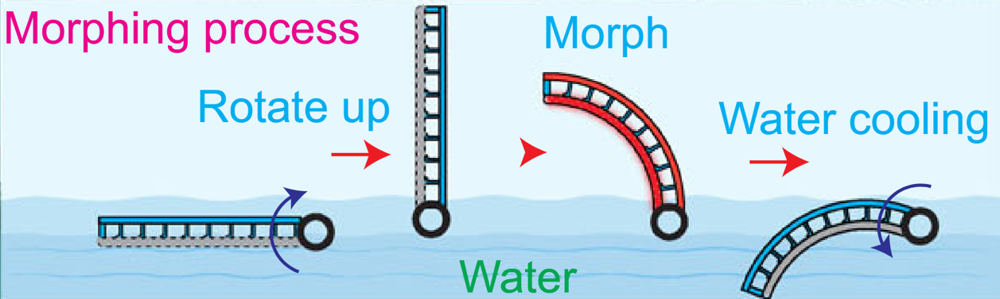
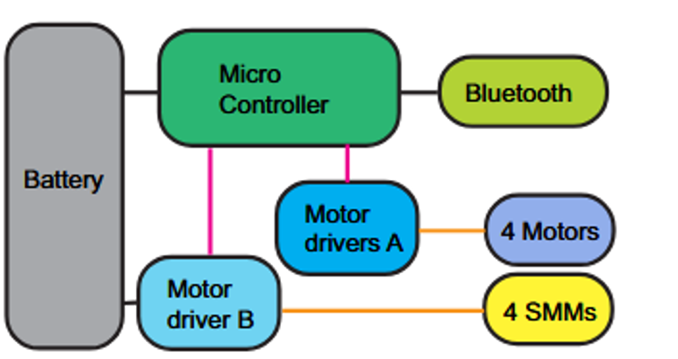
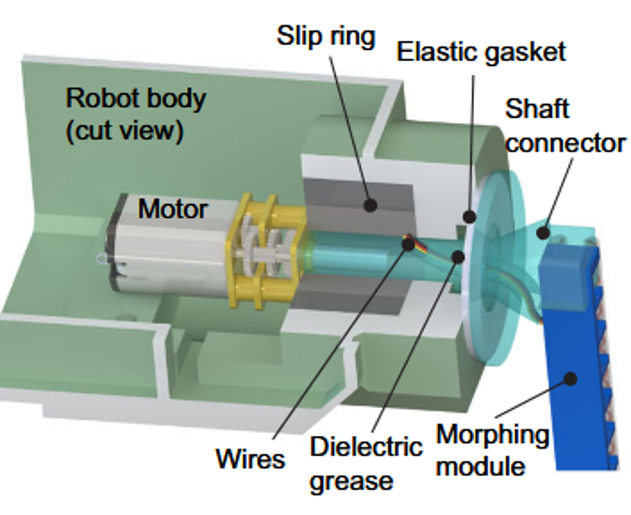
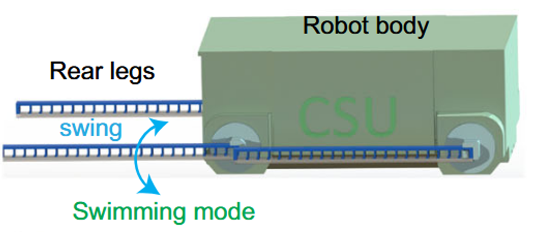
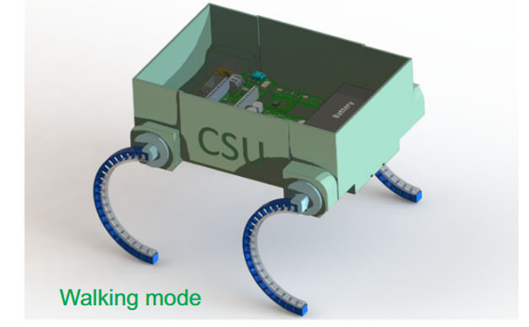

What this page covers
A full amphibious robot built around shape-morphing legs.
The robot-level evidence behind SMART highlights packaging, waterproofing, rotating leg power transfer, embedded control, and land/water tests beyond the bench setup.
- Robot body: compact waterproof enclosure, motors, shafts, seals, batteries, electronics, and rotating leg interfaces.
- Leg system: four shape-morphing legs that switch between straight swimming flippers and curved walking limbs.
- Testing: tank transitions, loose-pebble traversal, outdoor walking, river entry, endurance estimates, and Arduino MKR control code.
Problem
Build one physical platform that can swim and walk by changing limb geometry, instead of carrying separate mechanisms for water and land.
System challenge
Package batteries, electronics, motors, waterproofing, thermal morphing, rotating leg power transfer, and Bluetooth control inside one robot body.
System integration
The published author contribution identifies my role in designing and characterizing the amphibious robot, including the leg mechanism, packaging, and land/water testing.
What the project demonstrates
A complete field robot, not only a morphing-material sample.
The whole-system challenge was to package, power, seal, drive, remotely command, and test a shape-changing robot across real land/water transitions.
Mode-changing mechanism
Four 2D bending legs switch between straight swimming flippers and curved walking limbs, so one robot body can handle two very different terrain modes.
Constrained packaging
The robot body integrates motors, batteries, controller hardware, seals, shafts, and leg interfaces inside a compact 3D printed waterproof enclosure.
Power architecture
A single LiPo pack is split into logic and actuator rails, supporting microcontroller control, DC motors, and thermal shape-morphing modules without a tether.
Field validation
The robot was tested beyond a bench setup: indoor tank transitions, loose-pebble shore traversal, outdoor walking on rock, and river entry.
System architecture
Body packaging, rotating legs, and thermal shape locking had to work together.
Each leg is a 2D bending SMM connected through a shaft to a DC motor inside the waterproof body. An elastic gasket and dielectric grease protect the electronics, while electrical slip rings carry power into legs that must continuously rotate during ground locomotion.





Embedded morphing mechanism
The limb is both structure and actuator package.
The amphibious robot inherits the paper's 2D bending SMM architecture: an SMP spine provides shape locking, an embedded resistance heater softens the spine above its glass transition, and a sheathed twisted-and-coiled actuator bends the leg while also supporting self-sensing in the base module work.
Variable stiffness
The SMP spine changes from a rigid structural member to a soft morphing body when heated; the paper reports about a 67x storage-modulus drop from room temperature to 110 C.
Shape sequence
The morphing cycle softens the spine, actuates the TCA to bend the leg, cools the SMP to lock the new shape, then removes TCA power so the leg holds its geometry without continuous actuation.
Water as a system advantage
For SMART, the legs are dipped back into water after morphing, using the operating environment as an active cooling path for rapid stiffening.
Validation
Indoor tank and outdoor river tests validate the sealed robot body.
The robot swam with straight legs, morphed the legs to roughly 90 deg for walking, climbed from water onto loose pebbles, and demonstrated an outdoor walk-to-swim transition in a natural environment at about 3 C.
| Mode | Configuration | Reported behavior | Engineering result |
|---|---|---|---|
| Indoor swim | All legs are straight; the rear two legs swing while the front two remain stationary. | 0.2 body lengths per second in a room-temperature tank. | Separates aquatic propulsion from walking geometry. Shows waterproofing. |
| Water-to-land transition | Legs rotate vertically, soften, curve to about 90 deg, then dip into water for cooling. | Robot walks up onto shore and traverses loose pebbles. | Shows morphing, locking, and drivetrain timing in one sequence. |
| Outdoor land-to-water transition | Curved legs walk on rock, rotate to about 30 deg for recovery, then return near straight at about 10 deg. | 1 body length per second walking before front-leg push-off into the river. | Demonstrates unconstrained operation outside the lab tank. |

Energy and endurance
The morphing cost is intermittent, not continuous.
About 350 J is the estimated energy requirement for one 90 deg shape-morphing process of the 2D bending SMM. With the 450 mAh, 11.1 V pack, the module could morph 24 times before half capacity, and the amphibious robot was estimated at 31 minutes / 260 m walking or 37 minutes / 62 m swimming before half capacity.
Morph then lock
The SMM legs consume energy during heating and shape change, then retain the curved or straight geometry after cooling. That matters because the actuator does not need to continuously hold the robot's walking shape.
Battery-aware operation
The paper estimates roughly 350 J for a 90 deg morphing event, which translates to about 24 morph cycles before half of the 450 mAh, 11.1 V pack is used.
System implication
Estimated half-capacity operation was 31 minutes / 260 m walking or 37 minutes / 62 m swimming, showing that endurance was considered at the robot level, not only at the material level.
Embedded software
Arduino MKR BLE firmware turns the prototype into an untethered robot.
The Nature Communications firmware exposes a BLE command service for SMART. A writable byte characteristic selects terrestrial movement, swimming gait, morphing, reheating, encoder reset, leg heating for swimming, and push-off routines.
Wireless mode control
Phone-side BLE commands trigger named robot behaviors instead of requiring a wired serial connection in the field.
Encoded leg motors
Four leg motors use encoder counts, phase pins, and PWM control; each motor is stopped when its target position is reached.
Morphing sequence
Heating, TCA actuation, motor positioning, water-assisted cooling, and push-off actions are sequenced for land/water transitions.
What this demonstrates
One robot body combines waterproofing, thermal shape locking, rotating leg power transfer, battery distribution, remote control, and environmental testing.
The same leg modules are shown swimming, morphing, walking, and returning toward swimming geometry outside the lab.